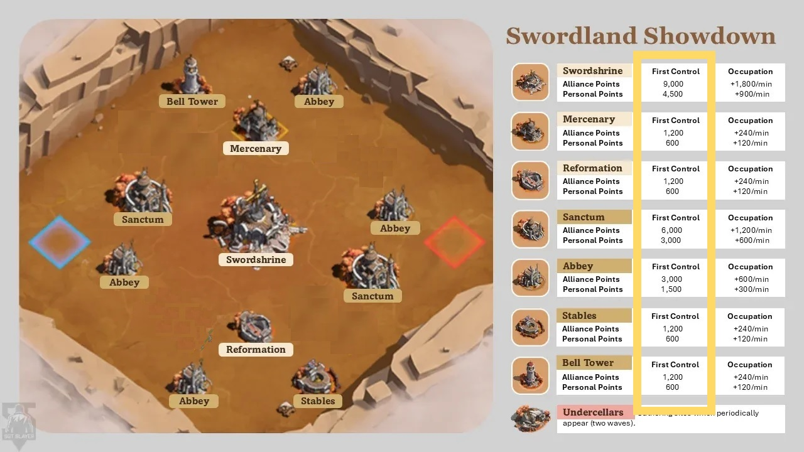
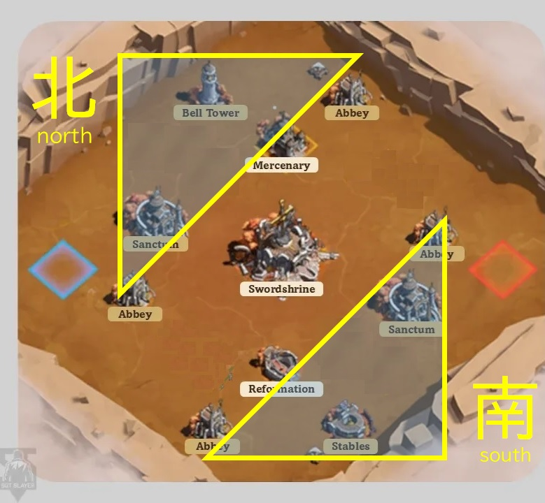

０．前準備
- ゲーム進行を確認
- 自分が赴くエリアや役割（攻撃・防衛・連絡役など）を把握
- エース英雄編成／駐屯編成／集結ノリ編成の保存を準備
- 必要ならマップ情報も再確認


※画像タップで拡大可能です（スマホ標準機能等）
１．開始前
- 専用チャットを開き、参加を投稿（スタンプでも可）
- 地図で担当エリアを確認し、優先施設付近へ転移
- 施設から少し離れた場所に分散すると都市攻撃を受けにくい
２．開始～１５分（最重要）
目的：施設の初回支配ポイントを確保
- 担当エリアの施設を攻撃し、初回支配ポイントを獲得するまで駐屯
- 敵を確認したら都市集結攻撃（単騎攻撃は兵損が大きい）
- 初回駐屯を取られても奪い返すか都市を飛ばせばOK
- 都市攻撃を受けた場合は都市援軍で防衛
優先度
★★★★ 鐘楼・厩舎
★★★☆ 味方都市
★★☆☆ 聖域
★☆☆☆ 修道院
施設戦の基本
- 敵施設への攻撃は集結を使用
- 集結前に座標を共有しメンバー呼び掛け
防衛困難な場合
- 駐屯メンバーを送還
- チャットに座標を貼り「負ける～欠片拾いお願い」と共有
都市攻撃を受けた場合
- エース英雄で防衛
- 勝ち目がない場合は兵士を占領・駐屯出征させ兵損回避
欠片拾い（重要）
- 敵施設の欠片は重要な得点源
- 敵施設を無理に奪い返す必要はない
- 欠片が溜まったタイミングで再奪還すると敵の欠片が半分飛び散る
- 飛び散った欠片を回収する
３．１５分経過～
解放施設
- 傭兵駐屯地
- 強化の間
- 聖剣祭壇
- ※鐘楼・厩舎の支配は可能なら継続
- 傭兵駐屯地・強化の間を確保
- 聖剣祭壇の初回占領は可能なら最優先
- ※祭壇は2分ごとに駐屯兵士10％負傷
- 長時間駐屯は避ける
- （戦力も分散するので元エリア再構築を行う）
４．２０分経過～
- 隠された地下室 解放
- 手すき部隊いれば全員で対応
- 兵士1名で採集, ただし施設防衛も必要
５．終了５分前
- 聖剣祭壇を多くの集結で再奪還
- 奪取後は欠片回収
その他メモ
- 無料加速の使用推奨
- 回復が追いつかない場合は12分離脱OK
- 離脱時は必ずチャットで宣言